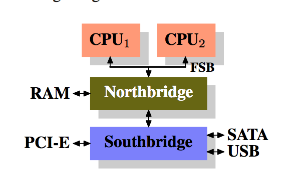
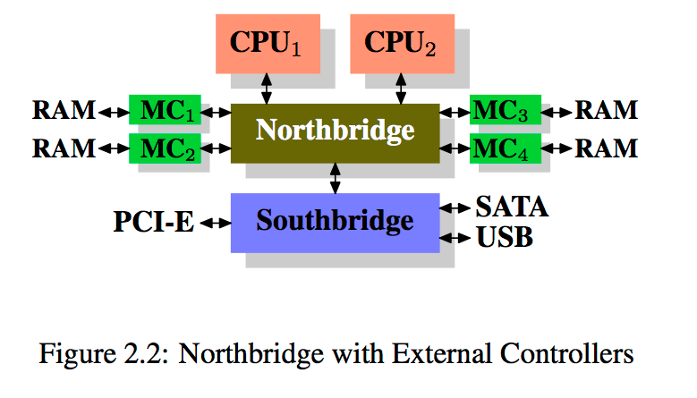
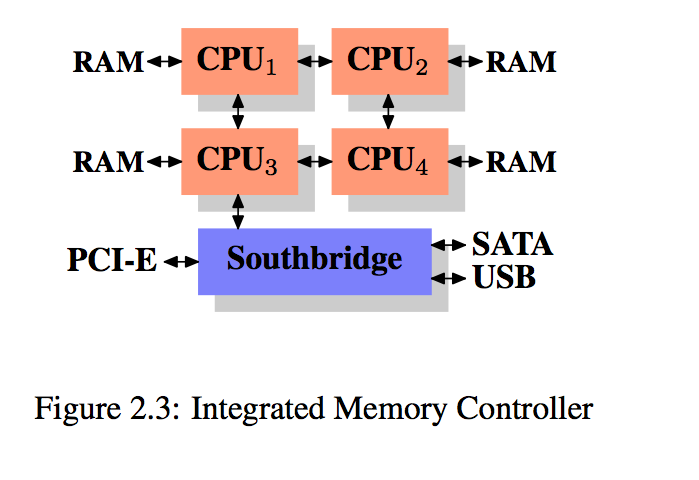
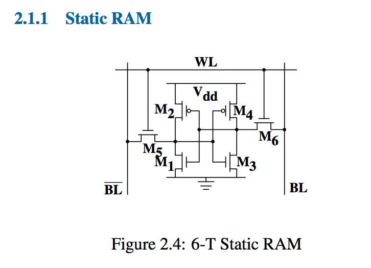
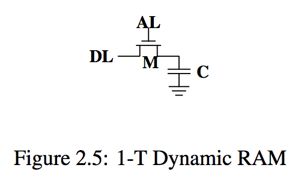
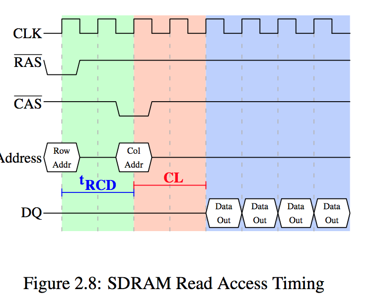

超线程
refer: https://www.cnblogs.com/Amaranthus/archive/2013/07/09/3180036.html Hyper-threading enables a single processor core to be used for two or more concurrent executions with just a little extra hardware.
现代计算机的架构
主要有两个部分组成，南北桥 
All CPUs (two in the previous example, but there can be more) are connected via a common bus (the Front Side Bus, FSB) to the Northbridge.
所有的cpu都通过fsb连接到北桥 fsb已经被qpi淘汰
北桥
The Northbridge contains, among other things, the memory controller, and its im- plementation determines the type of RAM chips used for the computer. Different types of RAM, such as DRAM, Rambus, and SDRAM, require different memory con- trollers.
北桥包含了内存控制器，决定了RAM(random access memory)的类型
To reach all other system devices, the Northbridge must communicate with the Southbridge. 为了接触到其他的devices, 北桥必须和南桥通信
南桥
南桥又被称为 I/O bridge 通过一系列的bus和其他devices通信
the PCI, PCI Express, SATA, and USB buses are of most importance, but PATA, IEEE 1394, serial, and par- allel ports are also supported by the Southbridge.
However, today the PCI-E slots are all connected to the Southbridge.
这样的结构造成了以下的结果
##所有的data communication 从一个cpu到另一个cpu必须 travel over the same bus used to communicate with the Northbridge. 这个已经有所改变，intel最新的多核处理器是通过qpi进行通信的 qpi: quick path iterconnect https://www.intel.com/content/www/us/en/io/quickpath-technology/quick-path-interconnect-introduction-paper.html
The Intel QuickPath Interconnect (QPI) is a point-to-point processor interconnect developed by Intel which replaced the front-side bus (FSB) in Xeon, Itanium, and certain desktop platforms starting in 2008. Prior to the name's announcement, Intel referred to it as Common System Interface (CSI).
... 2008年推出的技术，结果这篇文章是2007年的
QPI will be replaced by Intel UltraPath Interconnect (UPI) in future Skylake EX/EP Xeon processors based on LGA 3647 socket.[5]
QPI也要被淘汰...
the QuickPath Architecture assumes that the processors will have integrated memory controllers, and enables a non-uniform memory access (NUMA) architecture.
All communication with RAM must pass through the Northbridge.
The RAM has only a single port
Communication between a CPU and a device at- tached to the Southbridge is routed through the Northbridge.
DMA direct memory access
DMA allows devices, with the help of the Northbridge, to store and receive data in RAM directly without the intervention of the CPU (and its inherent performance cost).
it also creates contention for the bandwidth of the Northbridge as DMA requests compete with RAM access from the CPUs.
- DMA允许设备直接和RAM交互
- DMA会和CPU抢夺北桥带宽
第二个bottleneck
recent RAM types require two sep- arate buses (or channels as they are called for DDR2, see page 8) which doubles the available bandwidth.
北桥和RAM之间的总线所以出现了双通道（可以实现带宽加倍，内存访问在两个通道上交错分配）
北桥自身不带内存控制器，而是连接到外部多个内存控制器上，好处是支持更多的内存，可以同时访问不同的内存区，降低了延迟，但是对北桥的内部带宽要求巨大。 使用外部内存控制器并不是唯一的办法，比较流行的还有一种是把控制器集成到cpu内部，将内存直接连接到CPU  The advantage of this architecture is that more than one memory bus exists and therefore total available band- width increases
这样的架构，系统里有几个cpu就可以有几个内存库（memory bank），不需要强大的北桥就可以实现4倍的内存带宽。但是缺点也是很明显：1.导致内存不再是统一的资源（NUMA的得名），2.cpu可以正常的访问本地内存，但是访问其他内存时需要和其他cpu互通。在讨论访问远端内存的代价时，我们用「NUMA因子」这个词。比如说IBM的x445和SGI的Altix系列。CPU被归入节点，节点内的内存访问时间是一致的，或者只有很小的NUMA因子。而在节点之间的连接代价很大，而且有巨大的NUMA因子。
#CSI Intel will have support for the Common System Interface (CSI) starting with the Nehalem processors; this is basically the same approach: an integrated memory controller with the possibility of local memory for each processor.
cpu集成RAM

优点：不需要北桥庞大的带宽 缺点：memory is not uniform ( numa- non uniform memroy architecture)
RAM types
RAM主要分为2类静态RAM，动态RAM，前者速度快，代价搞，后者速度慢代价低
SRAM 比DRAM 更贵
static RAM

6个二极管组成的static dram
They have two stable states, representing 0 and 1 respectively. The state is stable as long as power on Vdd is available.
这张图就充分说明了为什么断电RAM中的内容会消失
主要有6个晶体管组成，核心是4个晶体管M1-M4,他们有2个稳定状态分别代表0和1
If access to the state of the cell is needed the word access line WL is raised. This makes the state of the cell imme- diately available for reading on BL and BL. If the cell state must be overwritten the BL and BL lines are first set to the desired values and then WL is raised. Since the outside drivers are stronger than the four transistors (M1 through M4) this allows the old state to be overwritten.
SRAM的特点
• one cell requires six transistors. There are variants with four transistors but they have disadvantages. • maintaining the state of the cell requires constant power. • the cell state is available for reading almost im- mediately once the word access line WL is raised. The signal is as rectangular (changing quickly be- tween the two binary states) as other transistor- controlled signals. • the cell state is stable, no refresh cycles are needed.
Dynamic RAM

All it consists of is one transistor and one capacitor 动态RAM只有一个晶体管和一个电容
- A dynamic RAM cell keeps its state in the capacitor C.
- The transistor M is used to guard the access to the state.
- To read the state of the cell the access line AL is raised;
- this either causes a current to flow on the data line DL or not, depending on the charge in the capacitor.
- To write to the cell the data line DL is appropriately set and then AL is raised for a time long enough to charge or drain the capacitor.
disadvantages:
readiing the cell discharges the capacitor
动态RAM优点是简单，但是缺点是由于读取状态时需要对电容器放电，所以这一过程不能无限重复，不得不在某个点上对它重新充电。更糟糕的是，为了容纳大量单元(现在一般在单个芯片上容纳10的9次方以上的RAM单元)，电容器的容量必须很小(0.000000000000001法拉以下)。这样，完整充电后大约持有几万个电子。即使电容器的电阻很大(若干兆欧姆)，仍然只需很短的时间就会耗光电荷，称为「泄漏」。
这种泄露就是现在的大部分DRAM芯片每隔64ms就必须进行一次刷新的原因。（附A关于三极管的输入输出特性
During the refresh cycle no access to the memory is possible since a refresh is simply a memory read operation where the result is discarded.
For some workloads this overhead might stall up to 50% of the memory accesses
A second problem resulting from the tiny charge is that the information read from the cell is not directly usable.
The data line must be connected to a sense amplifier which can distinguish between a stored 0 or 1 over the whole range of charges which still have to count as 1.
A third problem is that reading a cell causes the charge of the capacitor to be depleted.
This means every read operation must be followed by an operation to recharge the capacitor.
高能预警，why sram is faster than dram
Unlike the static RAM case where the output is immediately available when the word access line is raised, it will always take a bit of time until the capacitor discharges sufficiently. This delay severely limits how fast DRAM can be.
因为DRAM把01状态保存在电容里，导致每次读都需要电容放电
DRAM 优势 --size
The SRAM cells also need individual power for the transistors maintaining the state.
DRAM access
A program selects a memory location using a virtual address
The processor translates this into a physical address and finally the memory controller selects the RAM chip corresponding to that address.
Dynamic RAM Schematic

de-multiplexier
The memory controller must be able to address each RAM module (collection of RAM chips).
SRAM vs DRAM
SRAM is currently used in CPU caches and on-die where the connections are small and fully under control of the CPU designer.
DRAM Access Technical Details
- In the section introducing DRAM we saw that DRAM chips multiplex the addresses in order to save resources int the form of address pins.
- We also saw that access- ing DRAM cells takes time since the capacitors in those cells do not discharge instantaneously to produce a stable signal
- we also saw that DRAM cells must be refreshed.
DRAM (SDRAM) and its successors Double Data Rate DRAM (DDR).
SDRAM - Synchronous DRAM
同步DRAM，顾名思义，是参照一个时间源工作的。由内存控制器提供一个时钟，时钟的频率决定了前端总线(FSB)的速度。以今天的SDRAM为例，每次数据传输包含64位，即8字节。所以FSB的传输速率应该是有效总线频率乘于8字节(对于4倍传输200MHz总线而言，传输速率为6.4GB/s)。听起来很高，但要知道这只是峰值速率，实际上无法达到的最高速率。我们将会看到，与RAM模块交流的协议有大量时间是处于非工作状态，不进行数据传输。我们必须对这些非工作时间有所了解，并尽量缩短它们，才能获得最佳的性能。
2.2.1读访问协议
这里忽略了许多细节，我们只关注时钟频率、RAS与CAS信号、地址总线和数据总线。首先，内存控制器将行地址放在地址总线上，并降低RAS信号，读周期开始。所有信号都在时钟(CLK)的上升沿读取，因此，只要信号在读取的时间点上保持稳定，就算不是标准的方波也没有关系。设置行地址会促使RAM芯片锁住指定的行。
CAS信号在tRCD(RAS到CAS时延)个时钟周期后发出。内存控制器将列地址放在地址总线上，降低CAS线。这里我们可以看到，地址的两个组成部分是怎么通过同一条总线传输的。
既然数据的传输需要这么多的准备工作，仅仅传输一个字显然是太浪费了。因此，DRAM模块允许内存控制指定本次传输多少数据。可以是2、4或8个字。这样，就可以一次填满高速缓存的整条线，而不需要额外的RAS/CAS序列。另外，内存控制器还可以在不重置行选择的前提下发送新的CAS信号。这样，读取或写入连续的地址就可以变得非常快，因为不需要发送RAS信号，也不需要把行置为非激活状态(见下文)。
在上图中，SDRAM的每个周期输出一个字的数据。这是第一代的SDRAM。而DDR可以在一个周期中输出两个字。这种做法可以减少传输时间，但无法降低时延。

2.2.2预充电和激活
2.2.1中的图只是读取数据的一部分，还有以下部分：
显示的是两次CAS信号的时序图。第一次的数据在CL周期后准备就绪。图中的例子里，是在SDRAM上，用两个周期传输了两个字的数据。如果换成DDR的话，则可以传输4个字。即使是在一个命令速率为1的DRAM模块上，也无法立即发出预充电命令，而要等数据传输完成。在上图中，即为两个周期。刚好与CL相同，但只是巧合而已。预充电信号并没有专用线，某些实现是用同时降低写使能(WE)线和RAS线的方式来触发。
发出预充电信命令后，还需等待tRP(行预充电时间)个周期之后才能使行被选中。在图2.9中，这个时间(紫色部分)大部分与内存传输的时间(淡蓝色部分)重合。不错。但tRP大于传输时间，因此下一个RAS信号只能等待一个周期。
数据总线的7个周期中只有2个周期才是真正在用的。再用它乘于FSB速度，结果就是，800MHz总线的理论速率6.4GB/s降到了1.8GB/s
我们会看到预充电指令被数据传输时间限制（途中为COL Addr的传输）除此之外，SDRAM模块在RAS信号之后，需要经过一段时间，才能进行预充电(记为tRAS)（minimum active to precharge time（也就是RAS信号之后到充电的最小时间间隔））它的值很大，一般达到tRP的2到3倍。如果在某个RAS信号之后，只有一个CAS信号，而且数据只传输很少几个周期，那么就有问题了。假设在图2.9中，第一个CAS信号是直接跟在一个RAS信号后免的，而tRAS为8个周期。那么预充电命令还需要被推迟一个周期，因为tRCD、CL和tRP加起来才7个周期。
DDR模块往往用w-z-y-z-T来表示。例如，2-3-2-8-T1，意思是：
w 2 CAS时延(CL) x 3 RAS-to-CAS时延(t RCD) y 2 RAS预充电时间(t RP) z 8 激活到预充电时间(t RAS) T T1 命令速率
2.2.3重充电
充电对内存是性能最大的影响，根据JEDEC规范，DRAM单元必须保持每64ms刷新一次我们在解读性能参数时有必要知道，它也是DRAM生命周期的一个部分。如果系统需要读取某个重要的字，而刚好它所在的行正在刷新，那么处理器将会被延迟很长一段时间。刷新的具体耗时取决于DRAM模块本身。
2.2.5 结论
通过本节，大家应该了解到访问DRAM的过程并不是一个快速的过程。至少与处理器的速度相比，或与处理器访问寄存器及缓存的速度相比，DRAM的访问不算快。大家还需要记住CPU和内存的频率是不同的。Intel Core 2处理器运行在2.933GHz，而1.066GHz FSB有11:1的时钟比率(注: 1.066GHz的总线为四泵总线)。那么，内存总线上延迟一个周期意味着处理器延迟11个周期。绝大多数机器使用的DRAM更慢，因此延迟更大。 前文中读命令的时序图表明，DRAM模块可以支持高速数据传输。每个完整行可以被毫无延迟地传输。数据总线可以100%被占。对DDR而言，意味着每个周期传输2个64位字。对于DDR2-800模块和双通道而言，意味着12.8GB/s的速率。
但是，除非是特殊设计，DRAM的访问并不总是串行的。访问不连续的内存区意味着需要预充电和RAS信号。于是，各种速度开始慢下来，DRAM模块急需帮助。预充电的时间越短，数据传输所受的惩罚越小。
硬件和软件的预取(参见第6.3节)可以在时序中制造更多的重叠区，降低延迟。预取还可以转移内存操作的时间，从而减少争用。我们常常遇到的问题是，在这一轮中生成的数据需要被存储，而下一轮的数据需要被读出来。通过转移读取的时间，读和写就不需要同时发出了
2.3主存的其他用户 除了CPU外，系统中还有其它一些组件也可以访问主存。高性能网卡或大规模存储控制器是无法承受通过CPU来传输数据的，它们一般直接对内存进行读写(直接内存访问，DMA)。在图2.1中可以看到，它们可以通过南桥和北桥直接访问内存。另外，其它总线，比如USB等也需要FSB带宽，即使它们并不使用DMA，但南桥仍要通过FSB连接到北桥。
DMA当然有很大的优点，但也意味着FSB带宽会有更多的竞争。在有大量DMA流量的情况下，CPU在访问内存时必然会有更大的延迟。我们可以用一些硬件来解决这个问题。例如，通过图2.3中的架构，我们可以挑选不受DMA影响的节点，让它们的内存为我们的计算服务。还可以在每个节点上连接一个南桥，将FSB的负荷均匀地分担到每个节点上。